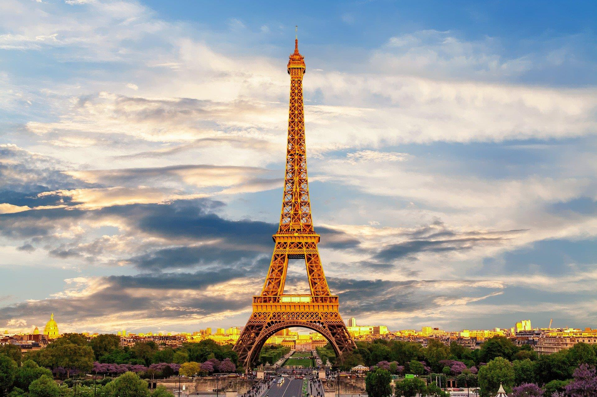

Az Eiffel Torony története

Az építése
A torony 1889-ben épült Gustave Eiffel tervei szerint, és kezdetben csak egy kiállítási objektum volt.

Panoráma a városra
A torony legfelső szintjéről fantasztikus kilátás nyílik Párizsra, különösen napnyugtakor.